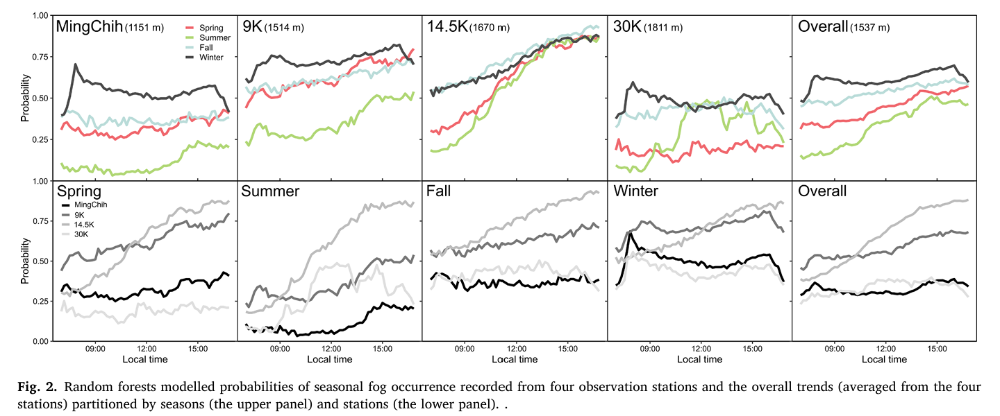
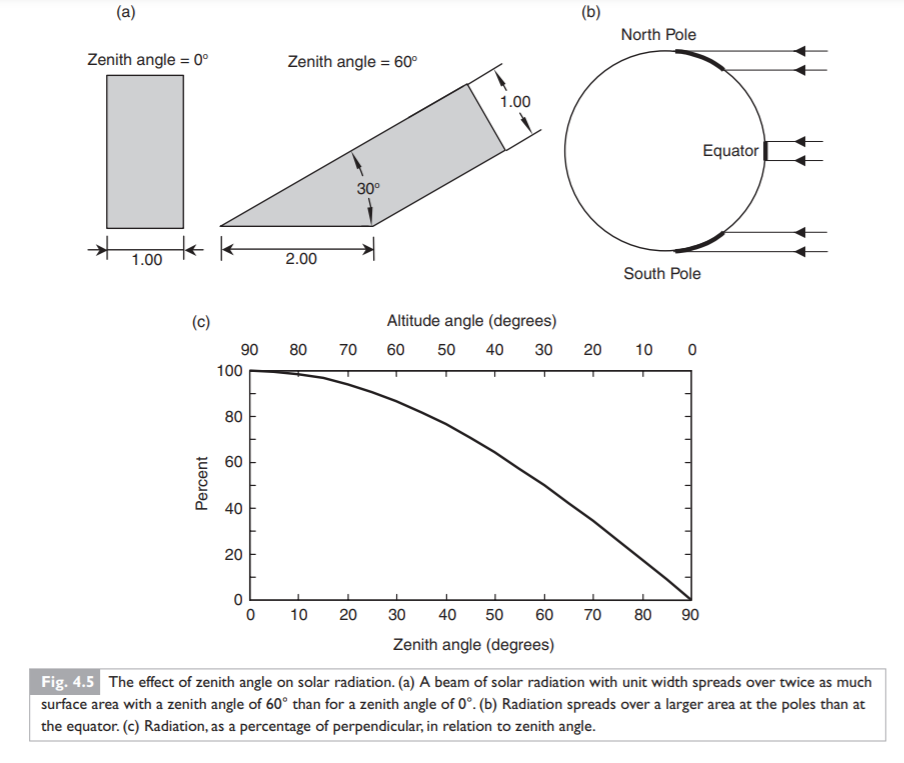
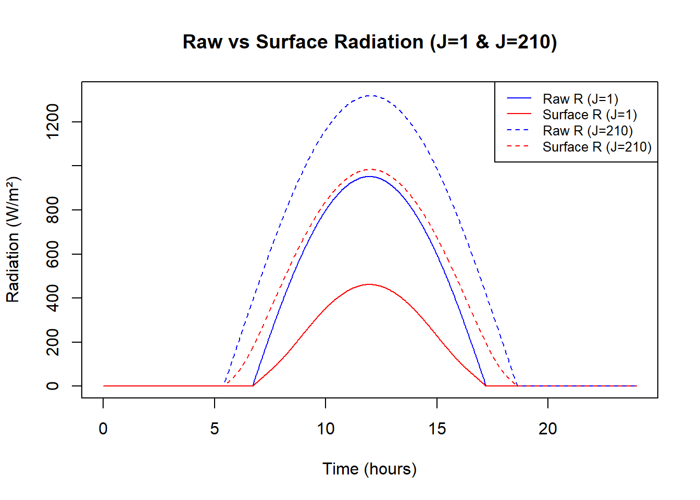
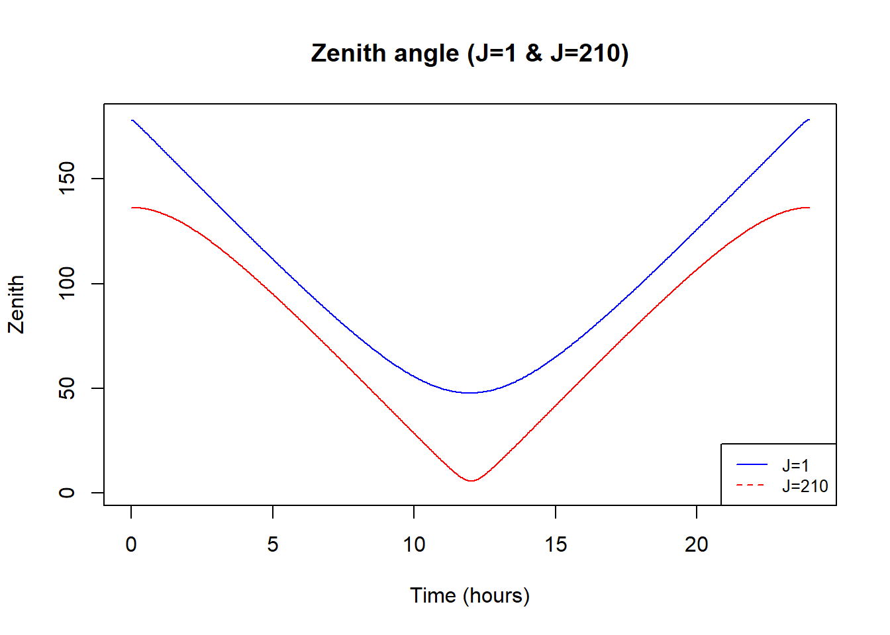
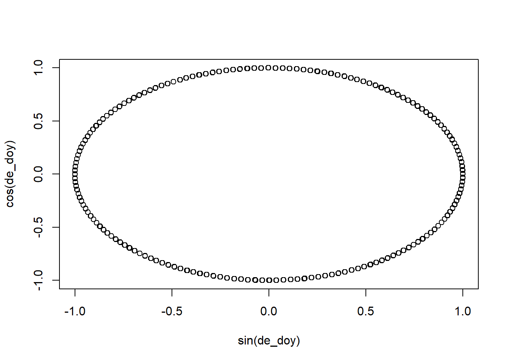

![]()

Paper link
Welcome to contact me for a copy.
Abstract
1. Background
Montane cloud forests (MCFs) are frequently immersed in low-altitude clouds or fog. The diurnal (defined as 07:00–16:50 local time) cycle of fog is particularly important for regulating the carbon, water and energy cycles of these ecosystems. Elevated temperatures may alter the spatiotemporal dynamics of fog and have cascading impacts on MCFs. Therefore, systematic monitoring of fog occurrence is essential for understanding the ramifications of climate change on these unique forests.
2. Mathods
This study aims to quantify three years (2018–2020) of diurnal fog occurrence with high spatiotemporal (5 km, 10 minutes) resolutions in subtropical MCF in northeast Taiwan. Four open-sky observation stations were installed along an elevation gradient (1151, 1514, 1670 and 1811 m a.s.l.) within the cloud band to record meteorological data including rainfall, air temperature and relative humidity. We also acquired spatiotemporally-corresponding photosynthetic photon flux density from the geostationary Himawari-8 satellite and derived solar zenith angle for each station. We utilized these ground and satellite meteorological attributes to model fog occurrence using seven machine learning methods. By referring to time-lapse images, the performance of random forests was determined to be superior compared to other approaches and was therefore selected to quantify spatiotemporal dynamics of fog occurrence.
3. Results
Fog was determined to be more abundant in terms of probability, frequency and duration in mid-elevations when compared to the lower and higher ends. Temporal analysis demonstrated that overall seasonality was pronounced with higher fog abundance in the afternoons and cold months but varied from station to station. In addition, three-year fog duration and event variability for each month were notable for all stations; the foggiest station was at 1670 m a.s.l. This study demonstrates the feasibility of using machine learning to quantify spatiotemporal dynamics of fog using cross-scale meteorological attributes, which may facilitate monitoring the impact of climate change on MCFs.
With the power of machine learning models, we were able to estimate fog probability across time and space! Each column in the image represents each meteorological station.
What I learned from this project
- A workflow of cleaning raw data, organizing data, inputing to models, comparing results from multiple models
- Computed solar zenith angle at any time point and location
- Download Himawari-8 data
- Deal with circular variables
Computed solar zenith angle at any time point and location
The R code provided estimates theoretical solar radiation for any time and location on Earth. This is useful for understanding the Earth’s energy budget, ecosystem monitoring, and renewable energy utilization.
A clearness parameter, which represents cloudiness of the sky, is needed to calculate solar radiation. The parameter is stored in “satelliteIndex2018.csv”. The clearness index data is downloaded from NASA Prediction Of Worldwide Energy Resources. Note: Sky Clearness Index means the surface radiation divided by the extraterrestrial radiation. If the value was closer to 1, the clearer of the sky. Generally, Sky Clearness Index ~0.25 (cloudy), ~0.7 (clear).
The calculation of the solar zenith angle (SZA) follows Bonan (2015). This chapter has a detailed description about the process of SZA calculation. The solar radiation is largely dependent on the angle of sun. Thus, if we ignore the atmospheric effect, the incident solar energy would equal to top of atmosphere solar radiation multiply cosine of SZA.

This figure shows how zenith angles affect the incoming solar radiatioin.
The following R code calculates 2-minute interval solar radiation estimates for a location in northeastern Taiwan throughout the year 2018.
#Reads in sky clearness data.
satellite_t <- read.csv("satelliteIndex2018.csv") # sky clearness index for each day
colnames(satellite_t) <- c("Y", "m", "d", "all_sky", "Clearness")
satellite_t[satellite_t$Clearness < 0, ] <- 0.7 # default extreme value to 0.7 (clear)
#Sets latitude/longitude, time steps, and constants like solar constant (1367 W/m²).
UTC <- 8 # local time zone
Std_long <- UTC * 180 / 12
s0 <- 1367 # solar constant
P_MC <- 88.86 # atmospheric pressure of your ROI
P <- P_MC
lat <- 24.65
long <- 121.47
time <- seq(0, 24, 1/30) # 2-minute interval
time <- time[1:720]
# install.packages("devtools")
# install.packages("magicfor")
library("devtools")Warning: package 'devtools' was built under R version 4.2.3Loading required package: usethislibrary("magicfor")Warning: package 'magicfor' was built under R version 4.2.3magic_for(print, silent = TRUE) #store the for loop results
for (J in 1:365) { # J: Julian day
delta <- asin(0.39785 * sin((278.97 + 0.9856 * J + 1.9165 * sin((356.6 + 0.9856 * J) * pi / 180)) * pi / 180)) * 180 / pi
f <- (279.575 + 0.9856 * J) * pi / 180
ET <- (-104.7 * sin(f) + 596.2 * sin(2 * f) + 4.3 * sin(3 * f) - 12.7 * sin(4 * f) - 429.3 * cos(f) - 2 * cos(2 * f) + 19.3 * cos(3 * f)) / 3600
t0 <- 12 - ((long - Std_long) / 15) - ET
a1 <- 360 * (J / 365) * pi / 180
a2 <- 1.00011 + 0.034221 * cos(a1) + 0.00128 * sin(a1) + 0.000719 * cos(2 * a1) + 0.000077 * sin(2 * a1)
R_top <- s0 * a2
h <- (time - t0) * 15
cosZ <- sin(lat * pi / 180) * sin(delta * pi / 180) + cos(lat * pi / 180) * cos(delta * pi / 180) * cos(h * pi / 180)
m <- pmax(P / 101.3 / cosZ, 0)
R_raw <- pmax(R_top * cosZ, 0)
direct <- pmax(R_top * satellite_t$Clearness[J]^m * cosZ, 0) #direct solar radiation
diff <- 0.3 * R_top * (1 - satellite_t$Clearness[J]^m) * cosZ #diffuse solar radiation
surfaceR <- direct + diff
Zenith <- acos(cosZ) * 180 / pi #Solar zenith angle
print(surfaceR, R_raw, Zenith)
}
R_MC_2018 <- magic_result_as_dataframe()
# add julian day and time interval column
JulianD<-rep(1:365, each = length(time))
tinterval<-rep(time, times = 365)
mydt<-as.data.frame(cbind(JulianD, tinterval))
R_MC_2018 <- data.frame(J = mydt$JulianD,time = mydt$tinterval, raw_R = R_MC_2018$R_raw, surface_R = R_MC_2018$surfaceR, Zenith = R_MC_2018$Zenith)I generate two plots that compare top of atmosphere radiation, surface radiation and zenith angle of Julian day 1 and 210.
# plot 1
plot(R_MC_2018$time[R_MC_2018$J == 1], R_MC_2018$raw_R[R_MC_2018$J == 1], type = "l", col = "blue",
ylab = "Radiation (W/m²)", xlab = "Time (hours)", main = "Raw vs Surface Radiation (J=1 & J=210)",
ylim = range(c(R_MC_2018$raw_R, R_MC_2018$surface_R), na.rm = TRUE)) # adjust y-axis to fit all
# Add surface_R for J = 1
lines(R_MC_2018$time[R_MC_2018$J == 1], R_MC_2018$surface_R[R_MC_2018$J == 1], col = "red")
# Add raw_R for J = 210
lines(R_MC_2018$time[R_MC_2018$J == 210], R_MC_2018$raw_R[R_MC_2018$J == 210], col = "blue", lty = 2)
# Add surface_R for J = 210
lines(R_MC_2018$time[R_MC_2018$J == 210], R_MC_2018$surface_R[R_MC_2018$J == 210], col = "red", lty = 2)
# Add legend
legend("topright", legend = c("Raw R (J=1)", "Surface R (J=1)", "Raw R (J=210)", "Surface R (J=210)"),
col = c("blue", "red", "blue", "red"), lty = c(1, 1, 2, 2), cex = 0.8)
# plot 2
plot(R_MC_2018$time[R_MC_2018$J == 1], R_MC_2018$Zenith[R_MC_2018$J == 1], type = "l", col = "blue",
ylab = "Zenith", xlab = "Time (hours)", main = "Zenith angle (J=1 & J=210)",
ylim = range(c(R_MC_2018$Zenith), na.rm = TRUE)) # adjust y-axis to fit all
lines(R_MC_2018$time[R_MC_2018$J == 210], R_MC_2018$Zenith[R_MC_2018$J == 210], col = "red")
legend("bottomright", legend = c("J=1", "J=210"),
col = c("blue", "red"), lty = c(1, 2), cex = 0.8)
In practice, we need to consider the atmosphere effect when we calculate surface solar radiation. In this case, the solar radiation would be divided into direct and diffuse radiation, which would be computed separately. Besides the SZA, sky clearness (affected by cloud, aerosol, water vapor etc.) also needs to be considered. The sky clearness index here, which was derived from satellite data, was one day resolution. The total solar radiation equals the sum of direct and diffuse radiation. From the formula above, we know that the accuracy of solar radiation depends largely on the accuracy of sky clearness index, which is also a common problem when it comes to satellite image processing.
There are many methods to calculate solar radiation and SZA. The differences include how to compute local time, or the way to compute declination of earth (delta in above code) etc. These methods are subtle differences if your scale is not too fine.
References
Bonan, G. (2015). Atmospheric Radiation. In Ecological Climatology: Concepts and Applications (pp. 61-73). Cambridge: Cambridge University Press. doi:10.1017/CBO9781107339200.005
Deal with circular variables
What is circular variables?
Circular variables are variables with cycle characteristics—for example, direction (from 0° to 360°), time (from 0 to 23 hr, or January to December). The beginning and the end of the variables are close to each other.
If you analyze these kinds of data as if they were normal linear variables (such as temperature, slope…), the results would be unexplainable.
For scientists in fields like ecology, geology, or geography, it is common to encounter circular variables. However, solutions for handling them are not widely discussed.
Ways to handle circular variables
1. Classification
The most intuitive way is to classify the circular variables, allowing you to add classified variables into your linear models.
For example, direction data can be classified into 4 categories:
- 0–45° → Class 1
- 45–90° → Class 2
- and so on.
2. Trigonometric function
Another method is to project the circular variables onto a unit circle and convert them to two-dimensional (x, y) variables. This maintains the cyclical nature of the original variables.
Example in R using day of year from 1 to 365:
doy_test <- c(1:365)
de_doy <- 360 * doy_test / length(doy_test) # Projecting to unit circle and showing as angle (deg)
plot(sin(de_doy), cos(de_doy))
Here, sin(de_doy) and cos(de_doy) become two new variables representing doy_test.
Circular statistics
If you need to compute means or variances of circular variables, Pewsey et al. (2013) is a recommended read. The book also covers regression models for estimating circular variables.
Additionally, you can consider applying Rayleigh and Watson Tests on circular data.
References
- Use of circular predictors in linear regression
- Pewsey, A., Neuhäuser, M., & Ruxton, G. D. (2013). Circular statistics in R. Oxford University Press.